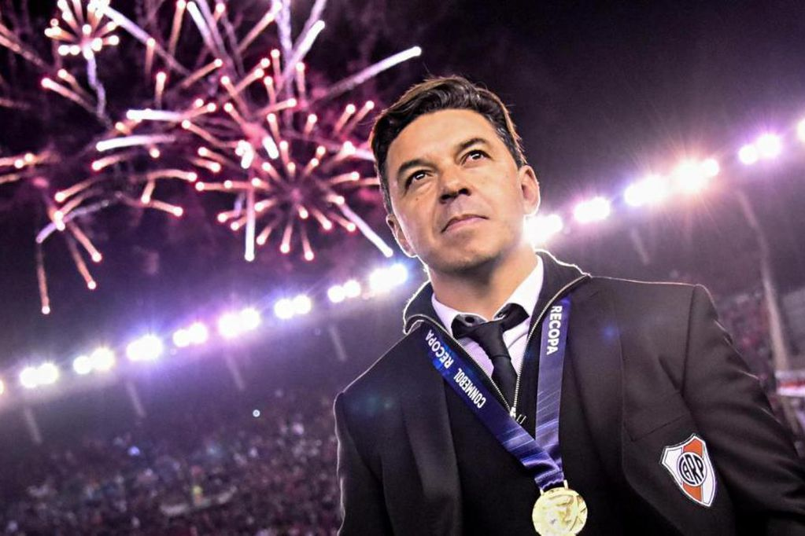

FUNDACION:
El Club Atlético River Plate fue fundado el 25 de mayo de 1901 en la ciudad de Buenos Aires, a partir de la fusión de dos clubes: Santa Rosa y La Rosales, dos equipos del barrio de La Boca que mantenían una amistosa rivalidad. Después de varias propuestas, decidieron llamarlo «River Plate». Ese mismo día se firmó el acta de fundación, y Leopoldo Bard fue elegido como primer presidente, y primer capitán del equipo. Un año más tarde después de la fundanciòn de institución y en el mismo barrio, nació Antonio Vespucio Liberti, un directivo muy importante en la historia de River.

HEGEMONIA Y FAMA MUNDIAL:
La década comenzó con el equipo afectado por el éxodo al fútbol colombiano. El equipo finaliza en la cuarta posición en 1950, pero lo más importante es la contratación del uruguayo Walter Gómez que resultaría una de las figuras más importantes de la década. Al año siguiente mejora su campaña y finaliza tercero. El equipo emprendió una exitosa gira por Europa entre fines de 1951 y principios de 1952, Las victorias más importantes fueron ante el Real Madrid en el Bernabéu y Manchester City en Maine Road, siendo el primer equipo argentino en vencer en Inglaterra. Ese equipo sería campeón con 40 puntos, sería La Maquinita de Santiago Vernazza, Eliseo Prado, el uruguayo Walter Gómez, Labruna y Loustau, junto al arquero Carrizo. El equipo además obtendría en ese año la Copa Ibarguren. Repetiría el título en 1953 con la misma base. El año siguiente sería de una campaña discreta con un tercer puesto a 7 puntos del campeón, pero al año siguiente retomaría la senda triunfal con el primero de tres campeonatos conseguidos al hilo. En 1955 el equipo vuelve al primer puesto con 45 puntos. Se consagró campeón nuevamente en la cancha de Boca con una victoria por 2 a 1. Al año siguiente ganó de nuevo el campeonato. Sufrió una baja muy importante, la de Walter Gómez y esto consolida en la titularidad Enrique Omar Sívori. En ese torneo River venció por 2-1 a Boca Juniors y Labruna marcó su último gol frente al clásico, llegando a 16 en superclásicos oficiales. También el mismo año el poderoso club italiano Juventus pagó 10 millones de pesos por Sívori y con ese dinero River construyó la tribuna Colonia. El equipo no resiente su funcionamiento y logra el título. Al año siguiente vuelve a ser campeón logrando así el tercer tricampeonato de su historia. River recibió la Copa de Oro Eva Perón un título que se le otorgaba a los equipos que ganaran un tricampeonato (tres ligas consecutivas) o cinco torneos alternados. Ese año le realizaron un partido homenaje a Ángel Labruna quien cumplía 25 años desde su primer año en las inferiores y 20 de su debut en primera. El rival fue Peñarol como en la inauguración del monumental y para la ocasión se volvió a formar la delantera más famosa de la Máquina, también asistieron el arquero Isola del amateurismo y Leopoldo Bard uno de los fundadores y primer presidente del club. En los últimos 20 años River, había obtenido 11 títulos de liga, sumaría 7 copas nacionales. Esa supremacía, llevó al periodista Dante Panzeri a afirmar que River era el Alumni de la era profesional, por el amplio margen de ventaja que obtuvo frente a sus competidores como lo hizo en el amateurismo el recordado club.46 Dicha superioridad fue extendida al ámbito del Río de la Plata, ya que obtuvo 5 de las 6 Copa Aldao en las que participó enfrentando al campeón de Uruguay más una edición inconclusa, en la que se impuso en el primer partido. Como consecuencia de esta prolongada era de éxitos, las estadísticas de la IFFHS ubican a River en el primer lugar en el ranking histórico sudamericano hacia 1960.
LA CONQUISTA DE AMERICA Y EL MUNDO:
Tras llegar a una nueva final, sería subcampeón Torneo Nacional ante Ferrocarril Oeste. Tras el subcampeonato se produce la llegada del «Bambino» Héctor Veira, asumiendo como entrenador para el segundo semestre del año. Comenzó la temporada 1985-86 y se consagró campeón seis fechas antes del fin del torneo, en ese mismo certamen, se concretó el recordado 2-0 a Boca en la Bombonera con dos goles del Beto Alonso, el primero de cabeza con una pelota naranja, tras el cual besó su camiseta de cara a la hinchada millonaria en uno de los últimos grandes momentos de su trayectoria, y el segundo de tiro libre con un desvío en la mano alzada de Roberto Passucci. Luego del título disputó la primera ronda de la Libertadores, en el camino hacia la final eliminó a Boca Juniors, Peñarol y Montevideo Wanderers. En el grupo semifinal se enfrenta contra Argentinos Juniors (campeón defensor) y el Barcelona de Guayaquil. El último rival era el América de Cali de Colombia subcampeón en la edición anterior de la Copa. El 22 de octubre River vence en la primera final por 2-1, goles de Juan Gilberto Funes y Alonso, siendo el primer equipo extranjero en salir victorioso del Estadio Pascual Guerrero en siete años. Una semana después, y nuevamente con un gol de Funes le da el triunfo a River por 1-0 y de esta manera se consagra Campeón de América por primera vez en su historia, cumpliendo el anhleado deseo del club de lograr la máxima conquista continental, siendo también una revancha para el club luego de las dos finales perdidas en las décadas anteriores. Tras unos meses de haber logrado el gran objetivo del año, el 14 de diciembre de 1986 disputó la Copa Intercontinental en el Estadio Olímpico de Tokio (Japón) frente al Steaua Bucarest de Rumania y fue victoria 1-0 con gol del uruguayo Antonio Alzamendi logrando así también ser por primera vez campeón del mundo y siendo el primer club argentino en ser campeón del torneo, Copa Libertadores e Intercontinental en la misma temporada. Para cerrar el ciclo histórico de títulos y bajo la conducción de Carlos Timoteo Griguol, River logró la Copa Interamericana del año 1987 ante la Liga Deportiva Alajuelense de Costa Rica, logrando la cuádruple corona. Para el año siguiente se produce la llegada de César Luis Menotti como director técnico y la también llegada de grandes nombres como Ángel Comizzo, Omar Palma, Claudio Borghi, Abel Balbo, el uruguayo Jorge da Silva, Carlos Enrique y el regreso de Passarella, River conformaría un equipo que no supo rendir y terminó en el 4.º puesto en el torneo. Tras los malos resultados en la temporada 1988-89 el club decide nombrar al Beto Alonso en la posición de mánager de fútbol y Reinaldo Merlo asumió la dirección técnica. Rápidamente se vieron los resultados, River se adjudicó una prolongada liguilla clasificatoria a la libertadores y alcanzó el segundo puesto al terminar la primera ronda del campeonato 89-90. Con la derrota de la lista oficialista de Osvaldo Di Carlo y la asunción de Alfredo Davicce a la presidencia del club, Merlo y Alonso decidieron renunciar a sus cargos. El cargo de director técnico fue ocupado por el recientemente retirado Daniel Passarella, quien con la base del equipo anterior obtiene un nuevo campeonato, y alcanza las semifinales de la Copa Libertadores. La segunda mitad de 1990 lo vio pelear el torneo ante el Newell's Old Boys de Marcelo Bielsa, River cayó en la última fecha en el Monumental ante Vélez, el día del retiro de Fillol, quien se despidió con una actuación soberbia impidiendo una nueva consagración millonaria.
LA ERA RAMON DIAZ:
Para el siguiente año se repatrió a Ramón Ángel Díaz. En el inicio del torneo River logró nueve victorias consecutivas, creando un récord para el fútbol argentino. Se consagró campeón amplia ventaja y unas fechas antes del final. El goleador fue Ramón Díaz con 14 tantos. En el plano internacional, Cruzeiro volvió a vencer en otra final, esta vez por la Supercopa de ese mismo año. El año 1992 también fue otro de los peores en la historia ya que no se lograron títulos Comenzó el siguiente año con la importante baja de Ramón Díaz, partió a Japón y con varios jugadores provenientes de sus divisiones inferiores, como Ariel Ortega, Marcelo Gallardo y Hernán Crespo River nuevamente logró otro título. En 1994, se produce la tan esperada vuelta Enzo Francescoli, quien volvía al club con el deseo de poder lograr ser campeón de América y con las adquisiciones de Roberto Ayala y Germán Burgos, con la dirección técnica de Américo Gallego, River ganó el campeonato de manera invicta (la única vez en su historial). Se aseguró la conquista del título al derrotar a su eterno rival de siempre en La Bombonera por 3-0. En el año 1995 se produce la renuncia de Carlos Babington quien tras el breve paso se fue sin pena ni gloria del club. El técnico que lo reemplazo fue nada más ni nada menos que Ramón Díaz, quien iniciaba sus primeros pasos siendo DT. Comenzó el año disputando la primera fase de la Copa Libertadores y el Torneo Clausura. En el camino fue eliminando rivales duros hasta que logró llegar a la final del certamen, Sporting Cristal, San Lorenzo y Universidad de Chile fueron los rivales a vencer. El rival final era América de Cali, el mismo de hace diez años atrás. La ida fue victoria para los colombianos por 1-0. En la revancha, dos goles de Hernán Crespo llevaron a River a consagrarse campeón de la Copa Libertadores 1996 y a Enzo Francescoli cumplió su sueño de ser campeón continental con el club. Tras la consagración partieron Almeyda y Crespo. Luego de la conquista continental el equipo ganó de punta a punta el Torneo Apertura, pero su mira estaba puesta en la Copa Intercontinental, frente a la Juventus, River llegó a Japón alentado por su buen desempeñó en el plano local, pero perdió frente al club turinés por 0-1 con gol de Alessandro Del Piero. El equipo afrontaba la partida de una sde sus máximas estrellas y figuras, a principios de 1997 se consuma la venta de Ortega al Valencia, lo cual permitió la consolidación como titular de Gallardo. River no puedo defender el título de la Copa al ser eliminado por Racing en octavos de final. Otro viaje a Japón, para disputar la Recopa Sudamericana ante Vélez Sarsfield, partido que terminaría en derrota 4-2 por penales. Sin embargo, el equipo de Ramón volvió a consagrarse campeón al ganar el torneo clausura y al semestre siguiente volvió a ser campeón otra vez consagrándose en el torneo apertura logrando así, el cuarto tricampeonato en su historia. Una semana después, River gana la Supercopa convirtiéndose así en el primer equipo de su país en ganar en forma simultánea un título nacional y otro sudamericano. El empate en uno ante Argentinos en cancha de Vélez por la última fecha del Apertura marcaría la despedida de Enzo Francescoli. Luego de la Mundial de Francia 98 se produjo la venta de Salas a la Lazio. En su lugar llegan Juan Antonio Pizzi y el colombiano Juan Pablo Ángel, el equipo alcanza la semifinal de la Libertadores. En mayo de ese año la Federación Internacional de estadísticas e historia de fútbol (IFFHS) lo posiciona en el primer lugar del ranking mundial de clubes, siendo el primer equipo argentino en lograr esa distinción. A pesar de este gran hito, el año 1998 fue un año para el olvido ya que no puedo conseguir ningún título. Un nuevo año comenzaba bajo la conducción de Ramón, ya con nuevas figuras como Pablo Aimar, Javier Saviola y Diego Placente ganó el torneo Torneo Apertura 1999. En ese torneo vence a Boca por 2-0, goles de Aimar y Ángel, siendo el primer triunfo ante Boca en el Monumental desde 1990. River Plate finaliza el siglo XX como el equipo argentino con más títulos obtenidos, el mejor posicionado en el ranking IFFHS y en el ranking de clubes del siglo elaborado por FIFA. Diversas publicaciones deportivas proclaman a River como Campeón del Siglo y se organiza un evento para festejar todos los títulos obtenidos hasta ese momento, donde jugaron un partido el equipo de primera contra un combinado con glorias de todos los tiempos. A principios del 2000 el director técnico Ramón Ángel Díaz mantenía una tirante relación con los dirigentes a pesar del reciente título y renunció tras una derrota en el torneo de verano, ante los juveniles de Boca Juniors. Américo Gallego asumió el cargo. River participó de la Copa Libertadores hasta ser eliminado por Boca Juniors. El club se recuperó obteniendo un nuevo bicampeonato al ganar el Torneo Clausura. El 25 de mayo de 2001 River Plate festejó sus 100 años de existencia con una marcha desde el obelisco hasta el Monumental, llamada Caravana Monumental, y un amistoso ante Peñarol de Uruguay. Este sería un año sin títulos para River. Ese mismo año se produjeron las transferencias de Pablo Aimar al Valencia y de Javier Saviola al Barcelona en sumas millonarias para la época. Los primeros años de los 2000 estuvieron marcados por una constante irregularidad en torneos nacionales e importantes frustraciones internacionales. A mediados de 2001 se produce la vuelta de Ramón Díaz y surgieron figuras juveniles como Andrés D'Alessandro y Fernando Cavenaghi, River Plate logró el Torneo Clausura con 43 puntos, consiguiendo Ramón Díaz su séptimo título como técnico de River, que incluyó una victoria 3-0 ante Boca en la Bombonera y un gol muy recordado de Ricardo Rojas. Cavenaghi sería el goleador del torneo con 15 tantos. Sin embargo el presidente José María Aguilar no le ofreció al prestigioso DT una renovación de contrato alegando que el club precisaba de buscar otros rumbos y Ramón Díaz deja su cargo al finalizar ese año. Su reemplazante fue el chileno Manuel Pellegrini y su primera experiencia al mando del club fue el tercer puesto en el Torneo Apertura. En el campeonato a cargo del nuevo DT River consigue ser campeón del torneo Torneo Clausura 2003 con un equipo integrado por jugadores como Leonardo Astrada, D'Alessandro, Cavenaghi, Javier Mascherano, y Martín Demichelis. A finales de ese mismo año, el equipo disputó la final de la Copa Sudamericana, tras un empate 3-3 en el partido de ida en el Monumental, perdió la revancha 1-0 frente al Cienciano de Perú. Esta derrota provocó la desvinculación del DT del club en diciembre del año 2003. El mediocampista Leonardo Astrada se había retiardo tras ganar el torneo en el anterior año y se había convertido en uno de los jugadores con más títulos oficiales en la institución con doce, y también supo ser el futbolista argentino con más torneos locales en la historia de la competición. Asumió como técnico y en su primera experiencia logró ser campeón del Torneo Clausura 2004. River vuelve a alcanzar las semifinales de la Libertadores luego de seis años y su rival fue ni más ni menos que Boca Juniors. Pierde 1-0 de visitante. River gana 2-1 en el Monumental con goles de Lucho González y de Cristian Nasuti y queda afuera en la definición por penales. Tras la eliminación, el equipo se desarma, siendo vendidos Cavenaghi, Lucho González y Mascherano.
LA ERA GALLARDO:
Luego de haber salido campeón dos veces en una semana, sorpresivamente Ramón Díaz presentaría la renuncia de su cargo como director técnico. Tras una larga búsqueda de directores técnicos, Marcelo Gallardo fue el elegido por la dirigencia y por el mánager Enzo Francescoli para suceder al histórico entrenador. El nuevo ciclo comnezó con éxito al consagrase campeón invicto de la Copa Sudamericana, venciendo en la final de vuelta por 2-0 a Atlético Nacional tras empatar previamente en Colombia 1-1. En el mismo torneo eliminó a Boca Juniors en la semifinal, con un global de 1-0 en una llave que quedó marcada por la histórica atajada en un penal de Marcelo Barovero a Emmanuel Giglioti al inicio del encuentro.68 En ese mismo semestre fue subcampeón del torneo, dos puntos por debajo del campeón Racing Club.69 Comenzó el año 2015 ganando la Recopa Sudamericanaa San Lorenzo de Almagro, campeón de la Copa Libertadores de la temporada anterior, ganándole los dos partidos de la serie, ambos 1-0 y con goles de Carlos Sánchez, logrando así un nuevo título internacional.70 El 26 de marzo de 2015 enfrentó al Sevilla, campeón de la UEFA Europa League por la Supercopa Euroamericana, venciéndolo por 1 a 0 con un gol de taco de Juan Cruz Kaprof. La serie exitosa se extendería en la Copa Libertadores 2015. En esta edición River tuvo un comienzo errático y clasificó en el último lugar de los 16 que pasaron a octavos. Allí se volvió a enfrentar a su clásico rival, Boca, otra vez por una instancia internacional. El primer partido, en condición de local, lo derrotó 1-0 en el Monumental y empataron 0-0 en la Bombonera en un partido suspendido en el entretiempo por agresión con gas pimienta de la parcialidad boquense hacia los jugadores millonarios. En cuartos de final y semifinales eliminó a Cruzeiro y Guaraní respectivamente. En la final enfrentó a Tigres de la UANL de México, empatando 0-0 en la ida y triunfando 3 a 0 en la vuelta con goles de Lucas Alario, Carlos Sánchez y Ramiro Funes Mori. El 11 de agosto viajó a Japón para disputar la Copa J.League-Sudamericana en su edición de 2015, la cuál era conocida en ese momento como «Copa Suruga Bank» contra Gamba Osaka, ganador de la J1 League 2014. River se impuso por 3-0 y de este modo obtuvo la cuádruple corona, al ser campeón vigente de todas las competiciones de clubes organizadas por CONMEBOL, siendo el único equipo en haberlo logrado hasta el momento. En diciembre volvió a Japón a disputar el Mundial de Clubes. Debutó el 16 de diciembre rente al Sanfrecce Hiroshima, venció 1-0 con gol de Lucas Alario, clasificando a la final contra Barcelona de España. La final se disputó el 20 de diciembre y el equipo catalán se impuso por 0-3 terminando el año sin poder haber logrado la hazaña mundial pero habiendo conquistado 3 títulos internacionales. Para principios de 2016 el equipo se vio obligado a sobrellevar bajas importantes como las de Carlos Sánchez, Matías Kranevitter y el retiro de Javier Saviola. El gran refuerzo del mercado de pases fue la tan esperada vuelta de Andrés D'Alessandro quien retornaba al club luego de 13 años. El semestre no fue positivo ya que quedó 9.º en la zona 1 del Campeonato de Primera División 2016 y eliminado en octavos de final de la Copa Libertadores a manos de Independiente del Valle tras perder en la ida 0-2 en Ecuador y derrotar 1-0 en la vuelta terminando con un global de 1-2. El segundo semestre abandonaron el plantel grandes referentes del ciclo exitoso que ganó los últimos títulos importantes del club, Marcelo Barovero, Leonel Vangioni, Leonardo Pisculichi y Gabriel Mercado. También poco tiempo después «Lucho» González dejó el club. El nuevo capitán pasó a ser Leonardo Ponzio quien junto a Jonathan Maidana y Andrés D'Alessandro se convirtieron en los referentes de un grupo que comenzaba a renovarse con jóvenes como Augusto Batalla, Gonzalo Montiel, Emanuel Mammana, Exequiel Palacios, Lucas Martínez Quarta y la apuesta de Sebastián Driussi como titular haciendo dupla de ataque con Lucas Alario. El equipo consiguió los dos principales objetivos del semestres al ganar la Recopa Sudamericana 2016 tras vencer a Independiente Santa Fe por 2-1 con anotaciones de Sebastián Driussi y Lucas Alario y al conquistar Copa Argentina tras derrotar en la final a Club Atlético Rosario Central por 4-3 con goles de Alario e Iván Alonso tras una campaña histórica en la cual ganó todos los partidos con 15 goles a favor y 4 en contra. Comenzó el 2017 perdiendo la Supercopa Argentina frente al campeón del Torneo 2016, Lanús por 0-3. El equipo retomaba el torneo a 12 puntos del puntero Boca Juniors. Allí comenzaría una remontada en la cual River cosechó 22 puntos en 9 partidos (8 victorias y 1 empate) llegando al superclásico como segundo en el torneo. River derrotó 3-1 a Boca en La Bombonera con goles de "Pity" Martínez, Lucas Alario y Sebastián Driussi. Las últimas cinco fechas solo pudo cosechar 5 puntos sobre 15 quedando segundo con 56 puntos, a 7 de Boca Juniors que logró 63. En la segunda mitad del año se desprendió de dos de sus máximas figuras, Sebastián Driussi y Lucas Alario ambos vendidos en ventas millonarias. El plantel se mantuvo casi en su totalidad y hubo grandes contrataciones, entre ellas las de Ignacio Scocco, Javier Pinola, Enzo Pérez y la vuelta de Germán Lux luego de 12 años. River llegaba las semifinales de la Copa Libertadores, venia de eliminara Guaraní en octavos y en cuartos a Jorge Wilstermann, luego de perder 0-3 en Bolivia y en la vuelta marcó un resultado histórico en la competición al ganar 8-0. Era el turno enfrentar a Lanús. La ida fue para River 1-0 con gol de Ignacio Scocco. La vuelta en la La Fortaleza tras ganar 2-0 el granate logra una remontada 4-2 con una polémica donde se hizo uso del VAR. A pesar de la eliminación en la copa, el equipo se consagró campeón de la Copa Argentina tras vencer a Atlético Tucumán logrando el bicampeonato repitiendo una formidable campaña donde convirtió 19 goles y tan solo recibió 3. Con este título River se clasificó para disputar la Supercopa Argentina frente a Boca Juniors, campeón del torneo 2016-17. Luego de un comienzo de año errático donde el equipo sumaba derrotas en el torneo local y tenía un rendimiento regular en la fase de grupos de la Copa Libertadores el equipo llegaba con dudas al partido frente a su clásico rival, en una noche inolvidable River derrotó a Boca Juniors por 2-0 consiguiendo así su primera Supercopa Argentina, los goles fueron de Gonzalo Martínez de penal e Ignacio Scocco. Este título significó el octavo dee Marcelo Gallardo, quien se convirtía en el segundo DT más ganador del club.71Luego de haber ganado la final al rival de toda la vida, el equipo finaliza primero en el Grupo D de Copa Libertadores con 12 puntos. River llegó a la final del certamen luego de eliminar a tres de los mejores equipos del continente como Racing Club, Independiente —campeón vigente de la Copa Sudamericana— y Grêmio de Porto Alegre —campeón vigente de la Copa Libertadores—. En la final se enfrentaría nada más ni nada menos que a su clásico rival, Boca Juniors —bicampeón vigente de la Superliga Argentina—. En la ida en la Bombonera fue empate 2-2: Ramón Ábila y Darío Benedetto marcaron para Boca, mientras que Pratto y Carlos Izquierdoz (en contra) lo hicieron para River. El 2 de noviembre se debía disputar el partido de vuelta en el Monumental pero dicho encuentro tuvo que suspenderse debido a que el micro que transportaba al plantel de Boca fue atacado por hinchas riverplatenses en las inmediaciones del estadio. Tras esto, la CONMEBOL finalmente decidió que el partido se juegue el 9 de diciembre en el estadio Santiago Bernabéu. El partido fue victoria del millonario por 3-1 con goles de Lucas Pratto, Juan Fernando Quintero y el «Pity» Martínez, logrando así su cuarta Copa Libertadores y habiendo ganado la final que fue vista en todo el mundo y considerada un hecho histórico en el fútbol mundial. River Plate se ganó el derecho para disputar el Mundial de Clubes de la FIFA en Emiratos Árabes Unidos del mismo año, quedando en 3º puesto. Perdió las semifinales del certamen contra el conjunto anfitrión Al-Ain, en los penales por 5-4. Ganó el duelo 4-0 contra el Kashima Antlers con el que se despidió de la competencia quedando en el 3.º lugar. En el año 2019 River finaliza la temporada de manera regular, en la Superliga en el 4.º puesto clasificando a la primera fase de la Copa Libertadores y llegó a cuartos de final de la Copa de la Superliga siendo eliminado Atlético Tucumán perdiendo 3-0 en la ida y ganando 4-1 en la vuelta. En el segundo semestre ganó la Recopa Sudamericana tras derrotar a Athletico Paranaense perdiendo 0-1 en la ida en Brasil y derrotando 3-0 en Argentina. Con esta consagración, Marcelo Gallardo se convirtió en el DT más ganador de la historia de River Plate con 10 títulos. River debía disputar la fase final de la Copa Libertadores, en instancia de octavos eliminó a Cruzeiro, en cuartos a Cerro Porteño y en instancia de semifinales volvió a eliminar a Boca Juniors, tras ganar en el Monumental por 2-0 y perder 1-0 en condición de visitante. En la instancia final se enfretó ante el Flamengo en lo que sería la primera final única en la historia de la competición y se dio en el Estadio Monumental de Lima de Perú. A pesar de dominar el partido y ponerse en ventaja con un gol de Rafael Santos Borré a los 14 minutos del primer tiempo, terminaría siendo derrotado por 1-2 tras dos goles de Gabriel Barbosa en los últimos minutos de juego. A pesar del duro golpe de perder la final, el club terminaría el año con alegría al conquistar la Copa Argentina venciendo en la final a Central Córdoba por 3-0, con goles de Ignacio Scocco, Ignacio Martín Fernández y Julián Álvarez logrando así su tercera Copa Argentina. Para comienzos del año 2020 el equipo se encontraba con la gran chance de pelear la Superliga Argentina, tras la reanudación del torneo se encontraba a pocos puntos del puntero Argentinos Juniors, el equipo consiguió seis triunfos consecutivos y fue puntero hasta la ante última fecha del torneo. Empató 1-1 en la última fecha frente a Atlético Tucumán, esto le permitió a su escolta Boca Juniors consagrarse campeón al ganar su partido en la última fecha.
